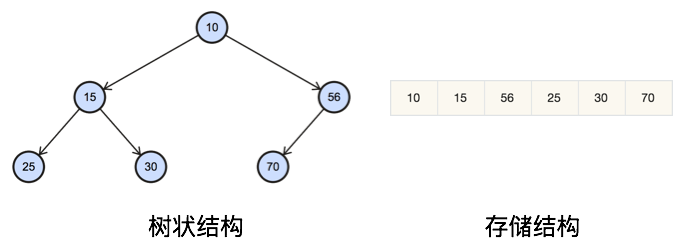

1 简介
本文参考 白话经典算法之七大排序 ，介绍常见的排序算法，包括原理和实现。
2 冒泡排序
冒泡排序主要原理就是依次通过交换排序相邻元素，使得较大元素移到后面，这样第N轮最差能够排序好前N大元素。
当然对于N个元素来说，最多只需要N-1轮。
void BubbleSortV1(int nums[], int size)
{
// check
if (!nums) return;
for (int end=size-1; 0<end; end--)
{
for (int idx=0, end=size-1; idx<end; idx++)
{
if (nums[idx] > nums[idx+1])
{
swap(nums[idx], nums[idx+1]);
}
}
}
}冒泡排序第一种优化是每一轮检查是否发生交换，如果没有则说明排序已经完成。
void BubbleSortV2(int nums[], int size)
{
// check
if (!nums) return;
for (int end=size-1; 0<end; end--)
{
int swapped = 0;
for (int idx=0, end=size-1; idx<end; idx++)
{
if (nums[idx] > nums[idx+1])
{
swapped = 1;
swap(nums[idx], nums[idx+1]);
}
}
if (!swapped)
{
break;
}
}
}冒泡排序第二种优化是每一轮记录最后一次交换的位置，下一轮只要遍历到这个位置即可。
void BubbleSortV3(int nums[], int size)
{
// check
if (!nums) return;
for (int end=size-1; 0<end; end--)
{
int last = 0;
for (int idx=0, end=size-1; idx<end; idx++)
{
if (nums[idx] > nums[idx+1])
{
last = idx;
swap(nums[idx], nums[idx+1]);
}
}
end = last+1;
}
}3 归并排序
归并排序的重点在于合并。
合并两个有序的序列是比较容易的：
比较两序列第一个元素，取出较小的，然后重复上述步骤直到有序列为空，然后从另一序列取出剩余元素。
容易知道单个元素序列是有序的；两个元素的序列可以拆分为两个单元素序列后合并成新的有序序列。
既然如此，那么对于任意长度序列，我们总是可以将其二分为两个相邻序列，然后通过递归完成合并工作。
这个递归过程最终会把序列拆分为单元素序列，而单元素序列是有序的，递归收敛，开始合并结果。
这样通过先递归的分解数列，再合并数列就完成了归并排序。
代码如下：
void MergeSortHelper(int nums[], int l, int r, int temp[])
{
if (l >= r)
{
return;
}
int m = l + (r-l)/2; // prevent overflow
MergeSortHelper(nums, l, m, temp);
MergeSortHelper(nums, m+1, r, temp);
// [l, m] and [m+1, r] are sorted
// merge [l, m] and [m+1, r]
int i=l;
int j=m+1;
int k=l;
while (i<=m && j<=r)
{
if (nums[i] < nums[j])
{
temp[k] = nums[i++];
}
else
{
temp[k] = nums[j++];
}
k++;
}
while (i<=m)
{
temp[k++] = nums[i++];
}
while (j<=r)
{
temp[k++] = nums[j++];
}
while (l<=--k)
{
nums[k] = temp[k];
}
}
void MergeSort(int nums[], int size)
{
int *temp = new int[size];
MergeSortHelper(nums, 0, size-1, temp);
delete[] temp;
}4 快速排序
快速排序基本思路如下：
- 先从数列中选出一个数(一般就是第一个数)作为基准数
- 比基准数大的数移到它的右边，小于或等于它的数移到它的左边
- 对于基准数左右两边区间重复第2步，直到区间内只有一个数
其中第二步可以简单理解为挖坑填数。
挖坑填数步骤如下：
- frnt = l; back = r; 将基准数挖出形成第一个坑arr[frnt]
- back–由后向前找比基准数小的数，填坑arr[frnt]，形成新坑arr[back]
- frnt++由前向后找比基准数大的数，填坑arr[back]，形成新坑arr[frnt]
- 再重复执行第2，3 二步直到 frnt==back，将基准数填坑arr[frnt]
以一个数组作为示例，取区间第一个数为基准数。
| 0 | 1 | 2 | 3 | 4 | 5 | 6 | 7 | 8 | 9 |
| 6 | 57 | 88 | 60 | 42 | 83 | 73 | 48 | 85 |
frnt=0, back=8
| 0 | 1 | 2 | 3 | 4 | 5 | 6 | 7 | 8 | 9 |
| 48 | 6 | 57 | 88 | 60 | 42 | 83 | 73 | 85 |
frnt=3, back=8
| 0 | 1 | 2 | 3 | 4 | 5 | 6 | 7 | 8 | 9 |
| 48 | 6 | 57 | 60 | 42 | 83 | 73 | 88 | 85 |
frnt=3, back=5
| 0 | 1 | 2 | 3 | 4 | 5 | 6 | 7 | 8 | 9 |
| 48 | 6 | 57 | 42 | 60 | 83 | 73 | 88 | 85 |
frnt=5, back=5
| 0 | 1 | 2 | 3 | 4 | 5 | 6 | 7 | 8 | 9 |
| 48 | 6 | 57 | 42 | 60 | 72 | 83 | 73 | 88 | 85 |
从上面可以看到，比72小的数都在72左边，比72大的数都在72右边。
代码如下：
void partitionArray(int arr[], int l, int r)
{
int seperator = arr[l];
int frnt = l;
int back = r;
if (l>=r)
{
return;
}
while (frnt<back)
{
while (frnt<back && seperator<arr[back])
{
back--;
}
if (frnt<back)
{
arr[frnt++] = arr[back];
}
while (frnt<back && seperator>=arr[frnt])
{
frnt++;
}
if (frnt<back)
{
arr[back--] = arr[frnt];
}
}
arr[frnt] = seperator;
partitionArray(arr, l, frnt-1);
partitionArray(arr, frnt+1, r);
}
void QuickSort(int nums[], int size)
{
partitionArray(nums, 0, size-1);
}5 大小堆与堆排序
5.1 二叉堆的特性
- 是完全二叉树或者近似完全二叉树
- 父节点的键值总是 >=(或者 <=)子节点的键值
- 每个节点的左右子树都是二叉堆
当父节点键值总是>=子节点键值时称为最大堆，当父节点键值总是<=子节点键值时称为最小堆。
大小堆就是指最大堆和最小堆，下文主要讲述最大堆。
5.2 堆的存储
由于大小堆是(近似)完全二叉树，因此可以用数组来表示。

对于索引为idx的节点，其父节点索引为(idx-1)/2。
对于索引为idx的节点，其左节点索引为2*idx+1，其右节点索引为2*idx+2。
5.3 堆的元素插入
插入元素到堆都是将其放在数组最后，可以发现从新元素的父结点到根节点是有序序列，只要将其插入到这个有序序列即可。
void MaxHeapFixUp(vector<int>& arr, int idx)
{
int p = (idx-1)/2; // 父节点索引
while (0<=p)
{
if (arr[p] >= arr[idx])
{
break;
}
swap(arr[p], arr[idx]);
idx = p;
p = (idx-1)/2;
}
}
void MaxHeapPush(vector<int>& arr, int elem)
{
arr.push_back(elem);
MaxHeapFixUp(arr, arr.size()-1);
}5.4 堆的元素删除
堆只能删除堆顶元素，实际操作是把最后的元素与其交换，然后从堆顶向下调整、恢复堆。
向下调整的过程，主要是确保父节点>=子节点(最大堆)，如果不满足则跟子节点较大的进行交换。
上述过程在发生交换的情况下需要递归向下进行。
void MaxHeapFixDownEx(vector<int>& arr, int pretendSize, int idx)
{
int size = pretendSize; // pretendSize <= arr.size()
while (idx < size)
{
int l = 2*idx + 1; // 左节点索引
int r = l+1; // 右节点索引
// 1) no children nodes
// 2) has left child and no right child and arr[l] <= arr[idx]
// 3) two children and arr[l] <= arr[idx] && arr[r] <= arr[idx]
if ((l>=size || arr[l] <= arr[idx])
&& (r>=size || arr[r] <= arr[idx]))
{
break;
}
// at least left child exists
int m = l;
if (r<size && arr[r] > arr[l])
{
m = r;
}
swap(arr[idx], arr[m]);
idx = m;
}
}
void MaxHeapFixDown(vector<int>& arr, int idx)
{
return MaxHeapFixDownEx(arr, arr.size(), idx);
}
void MaxHeapPop(vector<int>& arr)
{
swap(arr.front(), arr.back());
arr.pop_back();
MaxHeapFixDown(arr, 0);
}5.5 堆的建立
我们知道叶子节点是二叉堆，所以堆的建立只要从最后的非叶子节点开始往前调整堆即可。
void MaxHeapMake(vector<int>& arr)
{
int idx = arr.size()/2 - 1;
while (0<=idx)
{
MaxHeapFixDown(arr, idx--);
}
}5.6 堆排序
最大堆建立好之后，堆顶(数组第一个元素)就是堆中最大的元素。
这样的话，只要不断重复获取、移除堆顶直到堆变空为止，我们就得到了排序好的序列。
实际上我们并不需要移除堆顶，只需要与最后的元素交换，然后假装堆中元素减一执行恢复堆操作即可。
这样的话，可以减少额外空间的使用、节省拷贝排序后数据的操作。
实现从小到大排列的堆排序代码如下：
void HeapSort(vector<int>& arr)
{
int idx = arr.size()-1;
MaxHeapMake(arr);
while (0<idx)
{
swap(arr.front(), arr[idx]);
MaxHeapFixDownEx(arr, idx, 0);
idx--;
}
}6 插入排序
插入排序的基本思路是：
- 单个元素的序列是有序序列
- 依次将后续元素插入到前面的有序序列
怎么将元素插入到前面的有序序列？
一种方法是通过交换，前面的元素较大则交换，一直往前交换到不大于的元素为止。
void InsertSortV1(int arr[], int size)
{
for (int idx=1; idx<size; idx++)
{
for (int pos=idx; 0<pos; pos--)
{
if (arr[pos-1] <= arr[pos])
{
break;
}
swap(arr[pos-1], arr[pos]);
}
}
}另外一种方法就是通过后移腾出空位，效率更高，不过编码容易出错。
void InsertSortV2(int arr[], int size)
{
for (int idx=1; idx<size; idx++)
{
int backup = arr[idx];
int pos = idx;
while (0<pos)
{
if (arr[pos-1] <= backup)
{
break;
}
// 一边后移腾出空位，一边搜索合适位置
arr[pos] = arr[pos-1];
pos--;
}
// 1) pos==0，前面没有元素可比较，直接插入
// 2) pos>0 && arr[pos-1] <= backup
arr[pos] = backup;
}
}7 选择排序
选择排序的思路是：
- 初始时，序列为无序区间[0, size)，idx==0
- 在无序区间[idx, size)中选取最小的元素，将其与arr[idx]交换形成有序区间[0, idx]
- 重复第2步直到无序区间为空
void SelectSort(int arr[], int size)
{
for (int idx=0; idx<size; idx++)
{
int min = idx;
for (int pos=idx+1; pos<size; pos++)
{
if (arr[min] > arr[pos])
{
min = pos;
}
}
swap(arr[idx], arr[min]);
}
}8 希尔(Shell)排序
希尔排序是分组+插入排序。
版本一：
void ShellSortV1(int arr[], int size)
{
for (int gap=size/2; 0<gap; gap/=2)
{
for (int group=0; group<gap; group++)
{
for (int idx=group+gap; idx<size; idx+=gap)
{
for (int pos=idx; 0<pos && arr[pos-gap]>arr[pos]; pos-=gap)
{
swap(arr[pos-gap], arr[pos]);
}
}
}
}
}从gap开始，每个元素与自己分组内的元素进行插入排序。
版本二：
void ShellSortV2(int arr[], int size)
{
for (int gap=size/2; 0<gap; gap/=2)
{
for (int idx=gap; idx<size; idx++)
{
for (int pos=idx; 0<pos && arr[pos-gap]>arr[pos]; pos-=gap)
{
swap(arr[pos-gap], arr[pos]);
}
}
}
}9 基数排序/RadixSort/BucketSort
基数排序(LSD最低位优先)是依次按位数(个,十,百,千,万…)将元素放入0~9号通中排成新序列，最终完成排序。
首先我们按照正常思维实现：
int maxDigits(vector<int> &nums)
{
int d = 1;
int r = 10;
auto maxItr = max_element(nums.begin(), nums.end());
if (maxItr != nums.end())
{
auto maxNum = *maxItr;
while (maxNum >=r)
{
maxNum /= r;
d++;
}
}
return d;
}
void RadixSort(vector<int> &nums)
{
int digits = maxDigits(nums);
int radix = 1;
while (digits--)
{
vector<vector<int>> buckets(10);
for (auto n: nums)
{
int digit = (n/radix) % 10;
buckets[digit].push_back(n);
}
int idx = 0;
for (auto &v: buckets)
{
for (auto n: v)
{
nums[idx++] = n;
}
}
radix *= 10;
}
}通过 partial_sum 我们可以在静态数组上实现，而不用动态数组。
int maxDigits(int arr[], int size)
{
int d = 1;
int r = 10;
for (int idx=0; idx<size; idx++)
{
if (arr[idx] >= r)
{
d++;
r *= 10;
}
}
return d;
}
void RadixSort(int arr[], int size)
{
int digits = maxDigits(arr, size);
unique_ptr<int[]> tmp(new int[size]);
int radix = 1;
#define DIGITS_CNT (10)
for (int idx=0; idx<digits; idx++)
{
int cnt[DIGITS_CNT] = {};
for (int pos=0; pos<size; pos++)
{
int digit = (arr[pos]/radix) % 10;
cnt[digit]++;
}
for (int pos=1; pos<DIGITS_CNT; pos++)
{
cnt[pos] += cnt[pos-1];
}
// start from the end
for (int pos=size-1; 0<=pos; pos--)
{
int digit = (arr[pos]/radix) % 10;
tmp[cnt[digit]-1] = arr[pos];
cnt[digit]--;
}
for (int pos=0; pos<size; pos++)
{
arr[pos] = tmp[pos];
}
radix *= 10;
}
}